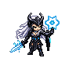
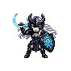
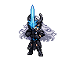
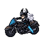

Plug in the watch
Connect your T-Watch S3 with a USB data cable. Different watch versions use different connectors, so the only real rule is: make sure the cable can do data, not just charging.
// Waifu for the T-Watch S3
Valkyrie turns a LilyGO T-Watch S3 into a tiny BLE and Wi-Fi watchdog. It spots stuff like trackers, Flipper Zero, card skimmers, Flock cameras and drone fingerprints, plays along with Meshtastic mesh life, then makes the whole thing feel like a little RPG on your wrist. Plug it in, hit flash and let the magic smoke stay inside the watch. She scan, she exp, but most of all, she protecc.
http://localhost).
Use desktop Chrome, Edge or Opera. Connect the watch with a USB data cable, click Flash Valkyrie and pick the serial port. The ESP Web Tools dialog also has Logs & Console when you want to see what the watch is saying.

Get started
No PlatformIO, no terminal arcana, no “which Python is this?” side quest. Just a browser, a cable and the watch.
Connect your T-Watch S3 with a USB data cable. Different watch versions use different connectors, so the only real rule is: make sure the cable can do data, not just charging.
Open this page in desktop Chrome, Edge or Opera, then smash the Flash Valkyrie button up top.
Choose the watch from the browser popup. If it does not show up, try another port, another cable or unplug and plug it back in.
Let it finish before touching anything. Once it reboots, use Logs & Console in the same dialog if you want to watch the waifu boot up.
Get your data
Wardrive mode saves Wigle 1.6 CSVs to
/valkyrie/wardrive/ on the watch. Plug in over USB and
pull them straight into your browser — no app, no CLI. Files
download to your normal Downloads folder, ready for
Wigle.net.
http://localhost.
What it does
Valkyrie uses the radios already in the T-Watch S3. BLE runs on NimBLE, Wi-Fi hops the common channels and the scan cycle stays power-aware so the watch is not melting itself for sport.
Watches for AirTag / Find My trackers, Flipper Zero, HC-03/05/06 skimmers, Flock cameras, Meta Ray-Ban / Quest gear and BLE RemoteID. AirTags get extra checks so one random ping does not become panic theater.

Hops channels 1, 6 and 11 looking for deauth, disassoc, EAPOL, Pwnagotchi-style beacons, Pineapple-ish gear, Flock signals and OpenDroneID / RemoteID drone fingerprints.

Open a threat and follow the live RSSI like a weird little treasure hunt. The filtering keeps the beeps and sprite from getting too jumpy while you move around.

Walk, ride or drive around and log nearby networks to Wigle 1.6
CSVs under /valkyrie/wardrive/. It can use onboard,
fixed or fresh phone position, then hands out XP when you stop.
Threat finds, wardrive sessions and mesh participation all feed the same Lvl / Exp / Req track. Completely unnecessary, extremely correct.
Threats go into /valkyrie/threats.log, the watch
gives you one buzz per scan window and a paired phone can get
notified. You can toggle BLE, Wi-Fi, threat types and ignored
devices from the watch.